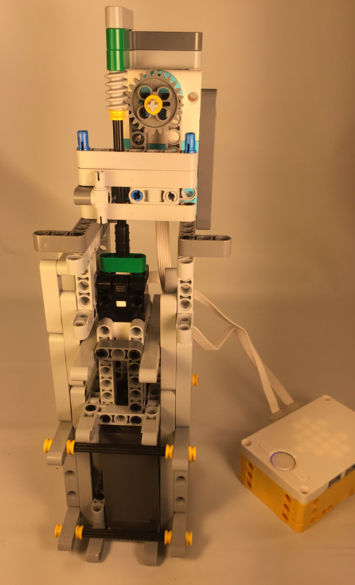
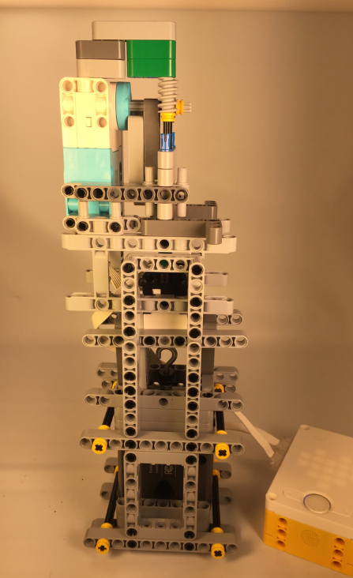
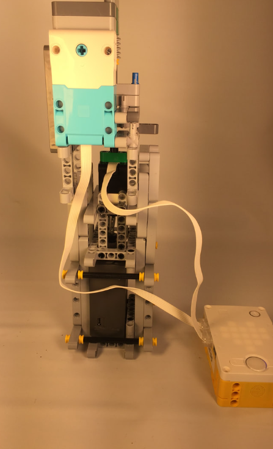
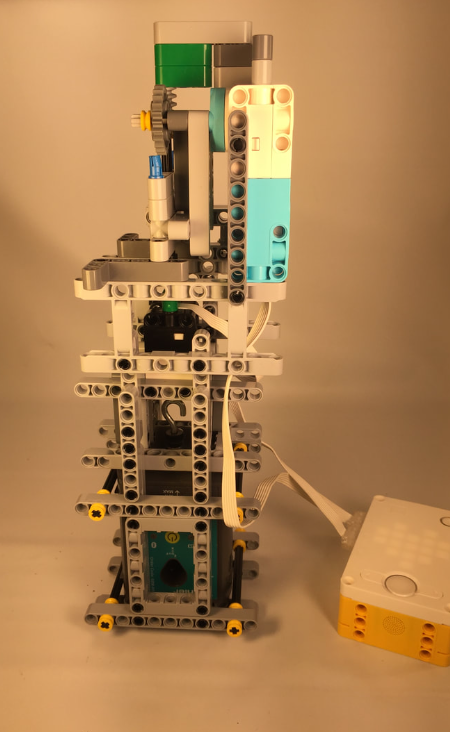
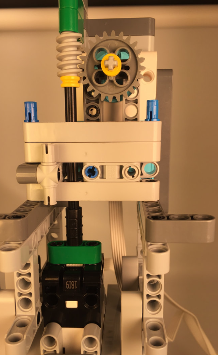
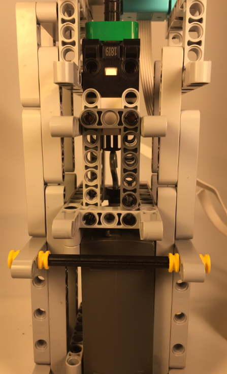

SPIKE Touch Sensor Calibrator






During the summer of 2019 I worked at the Tufts Center for Engineering Education and Outreach (CEEO), back when the LEGO SPIKE Prime kit was still in prototype development and some of its sensors needed improvement. I built the robot pictured above to help assess the accuracy of the SPIKE Prime touch sensor.
The robot works by pushing the SPIKE touch sensor and a Vernier Go Direct force sensor together in small increments, recording a paired reading from both sensors at each step.
Each pair of readings becomes a data point on a scatter plot, with the SPIKE sensor's reading as the x-coordinate and the Vernier sensor's reading as the y-coordinate. This visualization shows how strong the correlation is between the SPIKE sensor readings and the (much more precise) Vernier sensor readings, which can then be used to calibrate the SPIKE sensor's code.
I combined MicroPython code running on the SPIKE Prime touch sensor with Python code from the Vernier Go Direct touch sensor in LabVIEW in order to calibrate the SPIKE touch sensor.